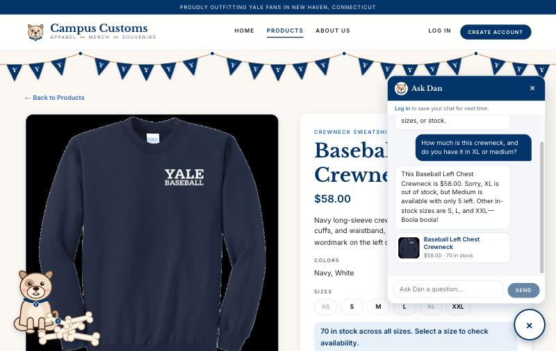
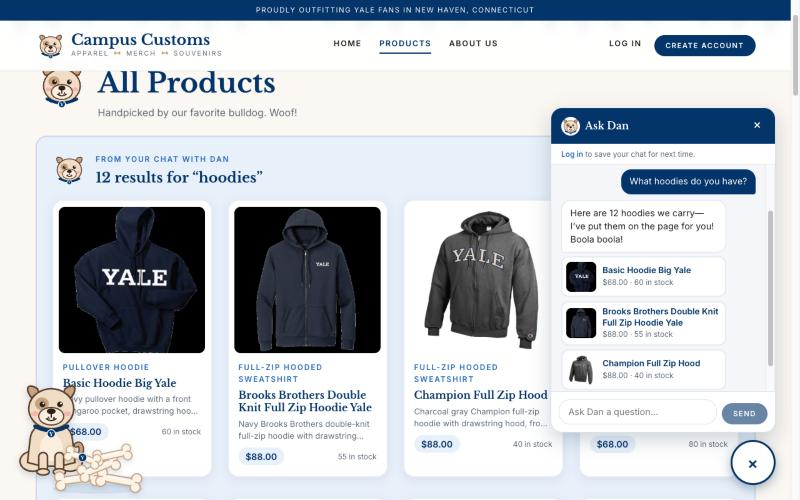
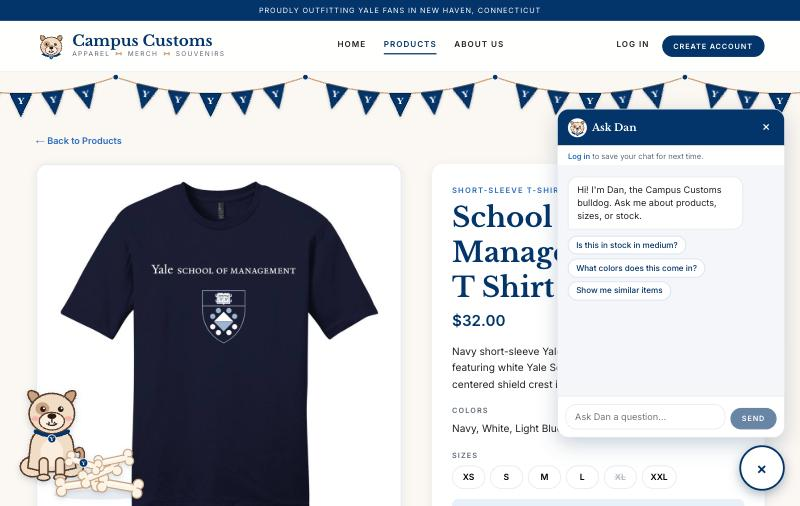
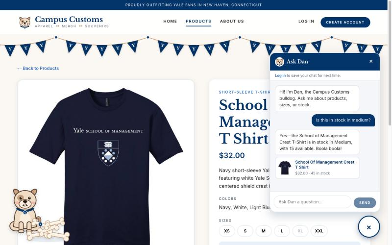

Screenshots of the running website and the "Ask Dan" shop chatbot
How these were tested
Run locally: React + Vite frontend on localhost:5173, FastAPI backend on localhost:8000, PydanticAI agent using gpt-5.6-luna through Portkey.
Browser window 1280 × 800, shopping as a guest (not logged in).
Every price and stock number shown in the screenshots was checked against data/campus_customs.db.
Check 1
Chat checks an item's stock and price honestly

On the Baseball Left Chest Crewneck page, the shopper asks "How much is this crewneck, and do you have it in
XL or medium?" Dan looks up the price and stock with his tools and replies that it is $58.00, XL is out of
stock, and Medium has only 5 left, then suggests the other in-stock sizes (S, L, XXL).
Matches the database: price $58.00; stock XS 0, S 15, M 5, L 25, XL 0, XXL 25 (70 total). The
page's own size buttons also show XS and XL crossed out.
Check 2
Dynamic search result cards after a category question

Asked "What hoodies do you have?" from the Home page, Dan searched the catalogue and the site jumped to the
Products page, where a "From your chat with Dan: 12 results for 'hoodies'" section shows the matches as full
product cards (image, type, name, short description, price, stock). The chat shows the first three as small cards, each linking
to that product's page.
Matches the database: e.g. Basic Hoodie Big Yale $68.00 / 60 in stock, Brooks Brothers Double
Knit Full Zip Hoodie Yale $88.00 / 55, Champion Full Zip Hood $88.00 / 40. The cards are rebuilt from the
database, not from the model's text.
Check 3 · Problem 9 feature
Suggested starter questions in the chat

When the chat is opened fresh on a product page, Dan's greeting is followed by clickable starter questions
that fit the page: "Is this in stock in medium?", "What colors does this come in?", and "Show me similar
items" (other pages show general ones like "What hoodies do you have?").

One click on "Is this in stock in medium?" sends the question; Dan knows "this" means the shirt on screen and
answers that Medium is in stock with 15 available. The suggestions disappear once the conversation starts.
Matches the database: School of Management Crest T Shirt, $32.00; stock XS 8, S 8, M 15, L 2,
XL 0, XXL 12 (45 total).